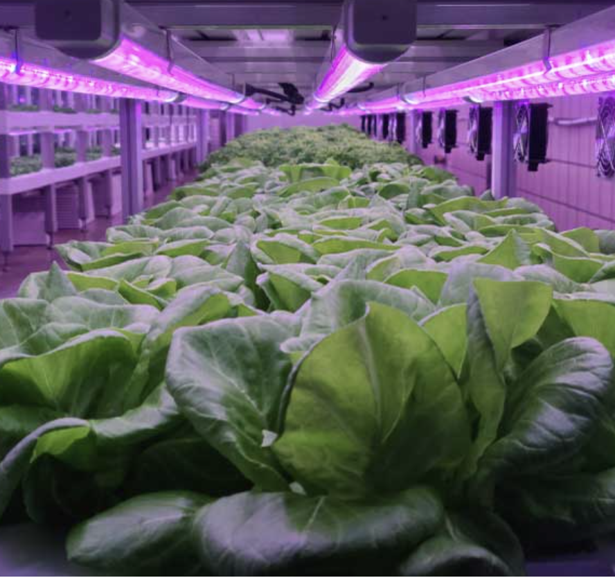

This experiment is useful in real life because it helps us understand how different colours of light affect plant growth and photosynthesis. Farmers and greenhouses can use this knowledge to choose the most effective light colours, such as red and blue light, which can help plants grow faster, healthier, and produce higher yields.
It is especially useful for indoor farming systems, where there is lrittle or no natural sunlight. By using specific coloured LED lights, plants can still grow efficiently in controlled environments. This is important in places with harsh climates, limited farmland, or during seasons when sunlight is reduced. In addition, this can make farming more efficient by saving energy and reducing waste, since only the most useful light colours are used. Overall, this experiment helps improve food production, supports sustainable farming, and allows plants to be grown in a wider range of environments.
Furthermore, this knowledge can be used in scientific research to better understand how plants respond to their environment. It can also help in developing new technologies, such as advanced grow lights and vertical farming systems, which are becoming more important in modern agriculture. This means we can grow more food in smaller spaces and help meet the needs of a growing population.
The experiment taught us that the colour of light affects how plants grow. It showed that some colours help plants grow better than others because they help plants make their own food. It also showed us that light is very important for plant growth. Changing the colour of light can change how fast and how well a plant grows. We also learned that in a fair test, we must keep everything the same, like water, temperature, and soil, and only change one thing—in this case, the light colour. Overall, the experiment helped us understand how plants grow and how science can be used to test and learn new things.